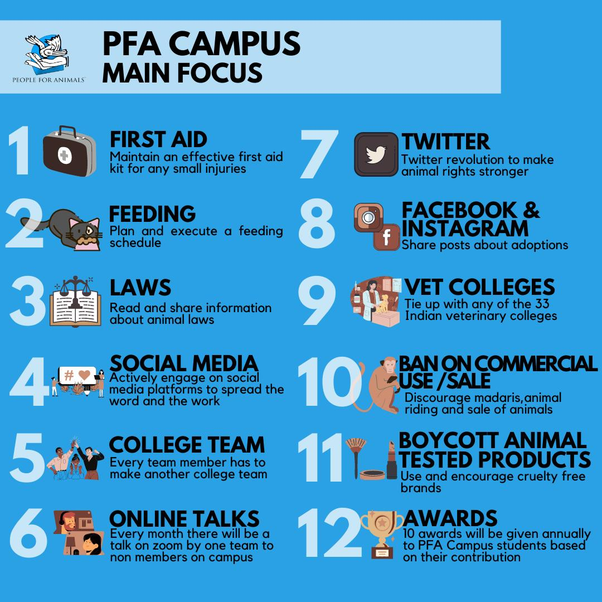

PFA Campus
Start an animal care society on your campus.
PFA Campus brings students and faculty together around one goal: the animals who live on and around their campus. Their health, their sterilisation, homes for the ones who need them, and a campus that knows how to help, run by a student team with PFA behind it.
- 4 stepsto a society PFA recognises
- 6 desksa student team can run
- ₹50a PFA Campus card, per member

What a society does
Care for the animals you walk past every day.
The same idea as a campus music or dance society, with a different purpose: the dogs by the canteen, the cats in the hostel block, the birds on the lawns. Six things every PFA Campus society works on.
Know your campus
List every animal on and around campus, species by species, and keep the list current, so nobody is missed.
Sterilised and vaccinated
Check who is sterilised and vaccinated, and arrange it with the nearest facility for the ones who are not.
Fed and cared for
Food, water and a dry place, on a rota shared across the team, so no animal depends on one person.
A rescue network
A list of the vets, shelters and animal hospitals near campus, so help is one call away when an animal is hurt.
Homes and fosters
Adoption and fostering drives for the young and the vulnerable, through your campus and your networks.
A kinder campus
Talks, drives and webinars with PFA, and work with your campus's photography, drama and other societies.
The team
Six desks. Pick the ones you can staff.
A society splits its work into desks, each with a few members and a monthly job. Start with the ones you can run well; add the rest as the team grows. What you pick here goes straight into your registration below.
- 01
Feeding
A rota for food and water for every animal on your list, and a monthly drive for food, medicine, blankets and beds given in kind.
- 02
Medical assistance
Watch over the animals nearby; when one is hurt or sick, find help from your rescue list and stay with the case until it is handled.
- 03
Fundraising
A monthly target for each member, met through social media, networks and word of mouth, for the society's work.
- 04
Social media
The society's own accounts: adoption appeals, the animals you care for, your events, and thanks to the people who help.
- 05
Public relations
The society's link to the college, the other societies, the local press and PFA, and the reason people hear about the work.
- 06
Education
Talks, seminars and webinars with PFA, and events that bring new students in and turn them into members.
How it works
From an idea to a recognised society.
- Form a core teamA handful of students who will meet, share one group chat, and split the desks between them.
- Find a faculty supervisorAsk a faculty member to supervise, and have the society recognised by your college, as any other society is.
- Register with PFA CampusSend the registration below. One or two of your core team are then added to the PFA Campus group.
- Get goingSocieties are recognised by Smt. Maneka Sanjay Gandhi, members receive volunteer certificates, and PFA Campus cards are ₹50 each.
Register
Put your society on the map.
Four short screens. The card beside the form is your society as PFA Campus will read it, filling in as you go.
Registered
Keep this number. Someone at PFA Campus reads every registration and will call or write to you. Recognition comes from PFA after that, not on the spot.
Questions
Before you start.
Who can register a society?
The student who leads the team, if they are 18 or over. In a school, or when the lead is under 18, the faculty supervisor registers the society for the team.
Does it cost anything?
Registering is free. Members who want a PFA Campus card pay ₹50 a card.
What does PFA give a society?
Recognition by Smt. Maneka Sanjay Gandhi, volunteer certificates for members, a place in the PFA Campus group, and seminars or webinars with PFA for your students.
We already have an animal society. Can we join?
Yes. Register it as it is, with the desks it already runs; nothing about it has to change.
What if an animal on campus needs help today?
Do not wait for the registration. Find the PFA unit nearest you on Units near you, and see the Academy for first aid while help comes.
Bring PFA to your campus.
A society of six students can change what happens to every animal on a campus. Register yours, or volunteer with PFA on your own.